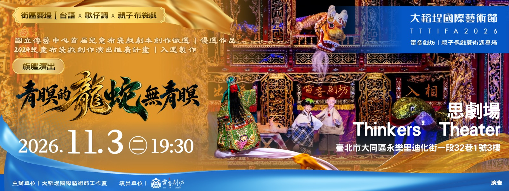

旗艦演出  Flagship Performance2026大稻埕國際藝術節《青瞑的龍蛇無青瞑》 2026.10.23（五）19:30–20:30思劇場 Thinkers’ Theater｜臺北市大同區迪化街一段32巷1號3樓票價 NT$500–800 故事取材自臺南南鯤鯓一帶民間傳說，從青瞑龍與青瞑蛇的視角重新說起，在奇幻寓言裡談看見與理解、偏見與接納，也將環境守護與土地記憶放進故事之中。 購票 →查看劇目介紹 →
演出互動DIY場 Performance + DIY演出互動DIY場《豬八戒痟娶某》 2026.10.21（三）–10.25（日）思劇場 Thinkers’ Theater｜臺北市大同區迪化街一段32巷1號3樓各場次時間依報名頁公告 從經典布袋戲《豬八戒痟娶某》出發，帶大家認識布袋戲角色、表演方式與戲台上的手持道具，並延伸至布袋戲扇子吊飾DIY，讓布袋戲從觀看走進親手製作。 查看場次／報名 →